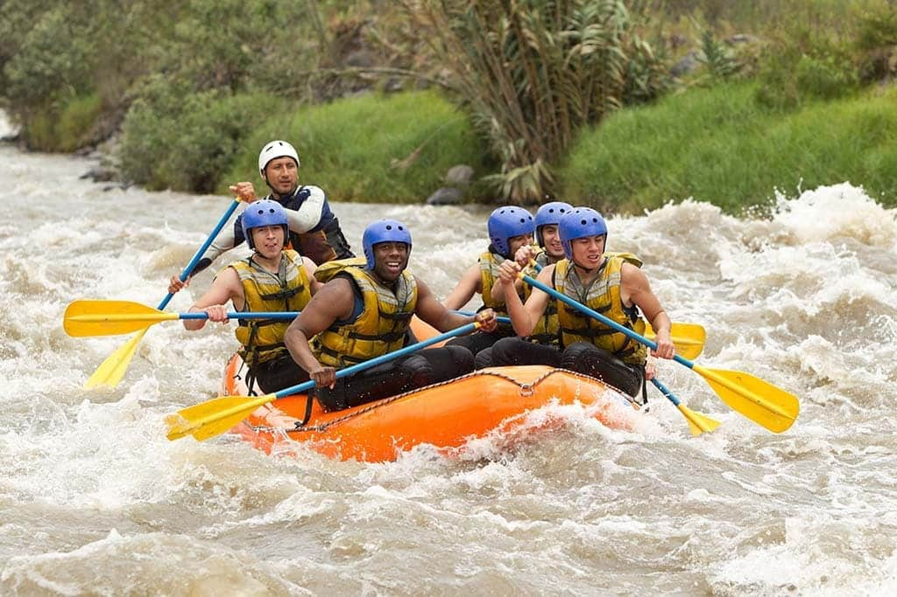

Nosso Compromisso

Lema: "Navegando Juntos, Vencendo Corredeiras."
Missão: Proporcionar aventuras seguras em rafting, conectando pessoas à natureza e promovendo o trabalho em equipe.
Visão: Ser a empresa líder em turismo de aventura e preservação ambiental na região até 2030.
Objetivos: Expandir rotas, capacitar guias e promover o impacto social positivo.